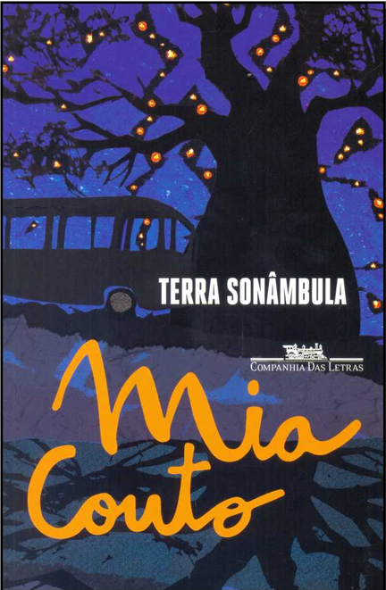

Terra Sonâmbula
Descrição do livro
Se dizia daquela terra que era sonâmbula. Porque enquanto os homens dormiam, a terra se movia espaços e tempos afora. Quando despertavam, os habitantes olhavam o novo rosto da paisagem e sabiam que, naquela noite, eles tinham sido visitados pela fantasia do sonho. (Crença dos habitantes de Matimati) O que faz andar a estrada? É o sonho. Enquanto a gente sonhar a estrada permanecerá viva. É para isso que servem os caminhos, para nos fazerem parentes do futuro. (Fala de Tuahir)
Baixar Livro